到處都是外國人，歐美人偏多
跨年超級嗨🎇
其實河內人沒想像兇
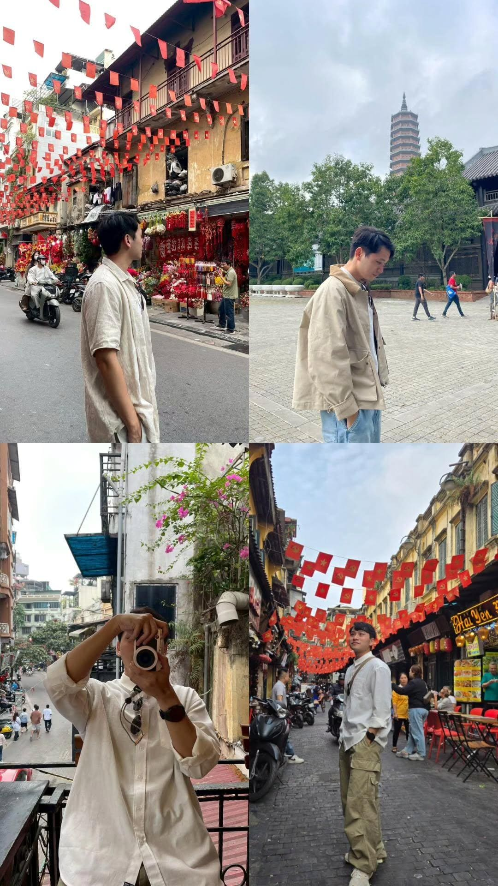
行前準備
- 河內冬季天氣跟台北差不不多，其實衣物也帶不少，但要著要溫差大🥶，建議洋蔥式穿法。
- 現金💴我們其實帶不多，兩個人只花一萬塊台幣，其他都是刷卡，要注意有些店家刷卡會多收3%。
- 需要先申請簽證，大概3~10天會核發下來，網址：E-VISA
- 請參考：越南自由行必讀！越南自由行打包行李攻略看這篇就夠了
行程
Day 1
飛機抵達河內約中午11:30，出境領行李，坐車到Airbnb約13:00抵達，放妥行李。
這次我們住還劍湖附近，是河內最貴也是最繁華的區域，因為跨年也在這裡舉辦，因此我們選擇這裡落腳。
我們直接到Airbnb附近的地方換💰，地點：https://maps.app.goo.gl/tvLv8q8iSpSz39FP8
中午我們在Ta Hien Beer Street附近找餐廳吃飯，景色超級讚！
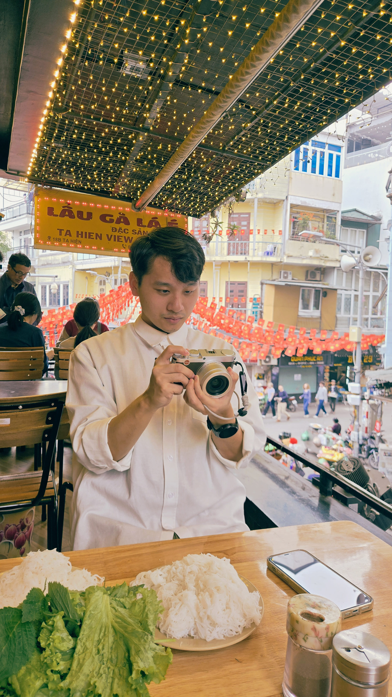
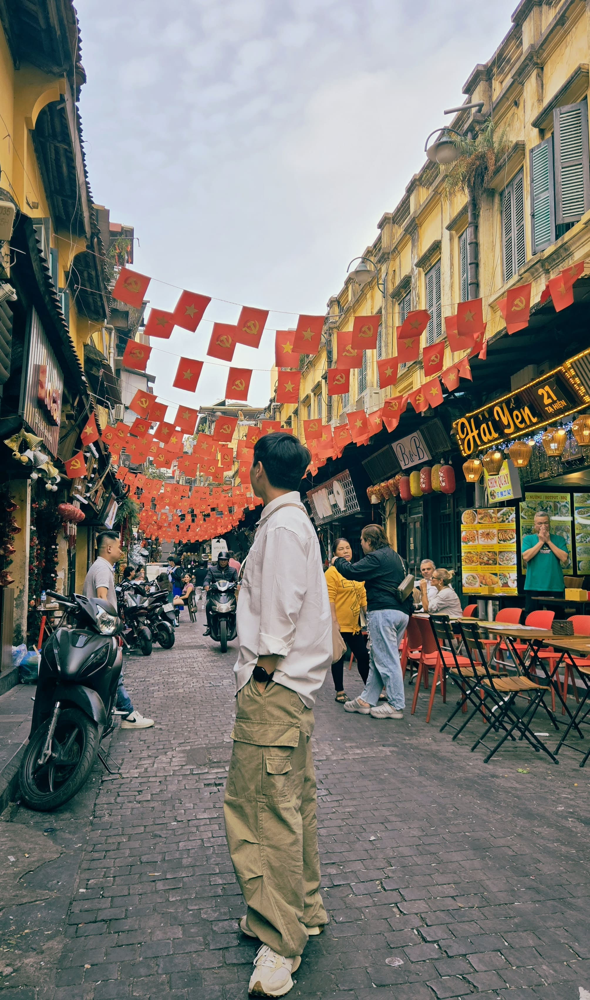
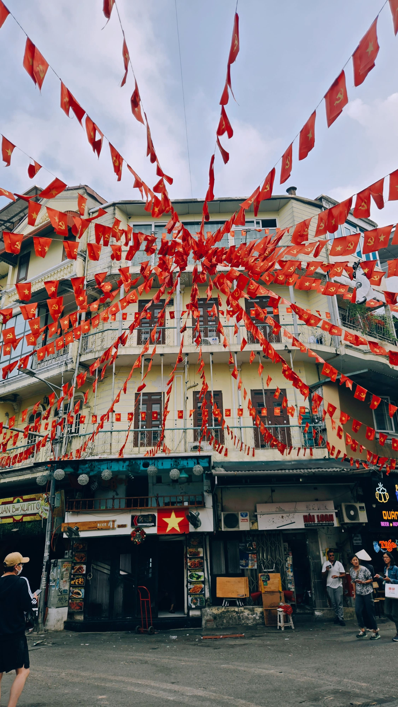
之後去到著名景點：鎮國寺，這裡景色超美也超好拍。
鎮國寺的歷史可追溯至第六世紀的李南帝 (Lý Nam Đế) 時期，被公認為河內 最古老的佛寺。最初名為開國寺 (Chùa Khai Quốc)，寺廟原址位於紅河 (Sông Hồng) 沿岸，後於1615年為防止侵蝕而遷至西湖 (Hồ Tây) 的金魚島 (Đảo Kim Ngư)。隨著時間的推移，寺廟曾多次更名，每一次都反映了不同的歷史階段。
縱觀其歷史，寺廟曾迎接過多次皇室參訪及重要的文化交流。1959年，印度總統拉金德拉·普拉薩德 (Rajendra Prasad) 贈予一棵從佛陀悟道的聖樹上嫁接而來的菩提樹，象徵著越南與印度之間深厚的佛教情誼。如今，鎮國寺 是一處備受敬仰的地標，承載著民族的心靈與建築遺產。(source:https://www.vietnamairlines.com/tw/zh-tw/plan-book/travel/travel-guide/tran-quoc-pagoda)
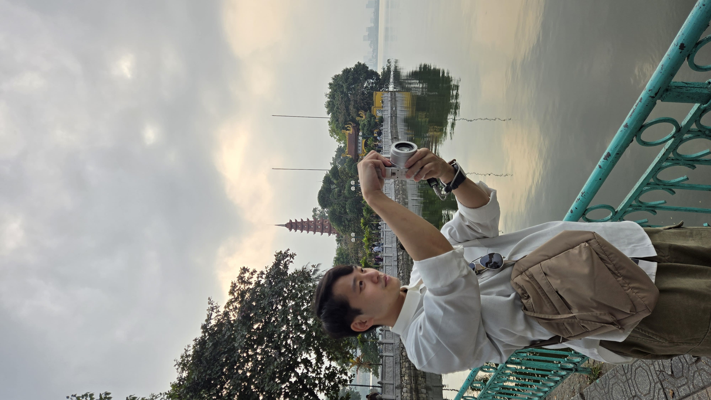
建於1998年的十一層寶塔是鎮國寺 最引人注目的特徵，高達15公尺。其對稱的設計裝飾著精雕細琢的蓮花圖案，象徵著心靈的覺悟。十一層的每一層都設有六扇拱形窗戶，每扇窗內都供奉著一尊由寶石精心雕琢的阿彌陀佛 (Phật A Di Đà) 像，總計66尊。
寶塔頂端是一座九層蓮台，同樣由寶石製成，象徵著心靈的升華。這座建築傑作與1959年印度總統拉金德拉·普拉薩德 (Rajendra Prasad) 所贈、從佛陀證道的菩提伽耶 (Bồ Đề Đạo Tràng) 原始菩提樹嫁接而來的聖樹和諧相伴，更深化了寺廟的心靈意義。
(source:https://www.vietnamairlines.com/tw/zh-tw/plan-book/travel/travel-guide/tran-quoc-pagoda)
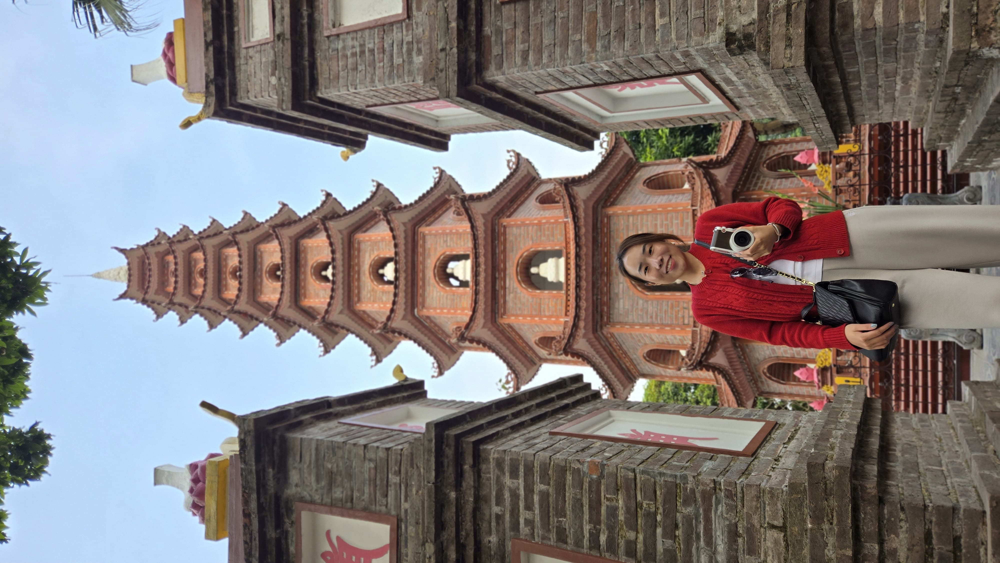
離開後回到河內市區，欣賞天主教堂St. Joseph Cathedral，剛好又是聖誕節後幾天，外面還有聖誕樹，晚上人潮也較少。
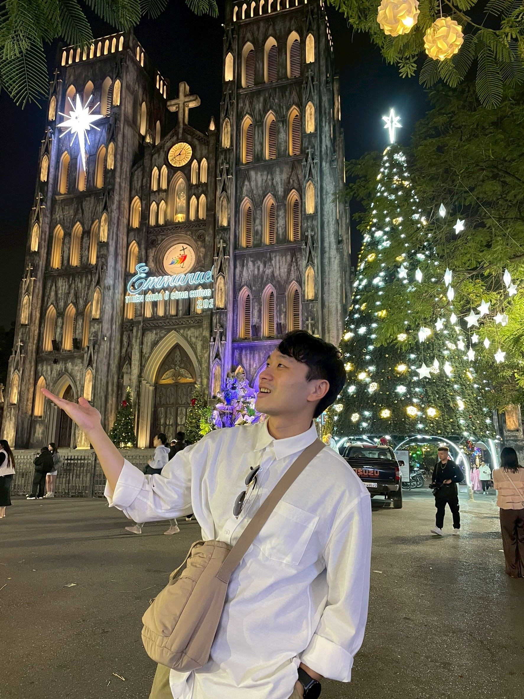
再步行抵達著名的河內火車街，建議在火車班次提早30~60分鐘抵達。
YouTube Shorts:https://www.youtube.com/shorts/3xjEDx9t3Gc
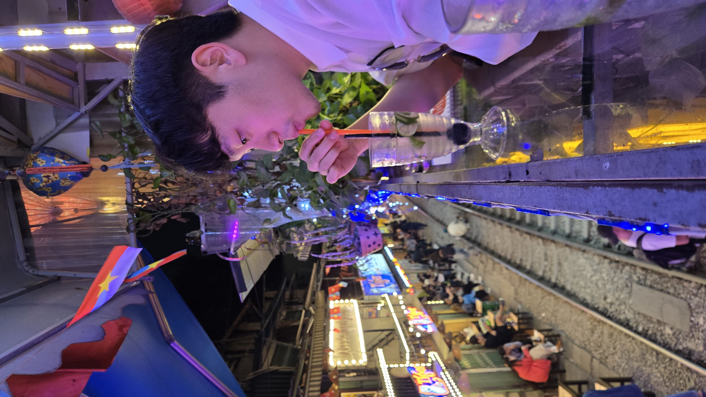
結束後，體驗了越式洗頭（原來洗頭都是用指甲用力清洗），回民宿。
Day 2 (長安：陸龍灣)
今天行程前往陸龍灣，其實這是台灣講法，越南人都稱作長安名勝群，這裡不僅是聯合國教科文組織世界遺產，也是電影《金剛：骷髏島》的取景地。
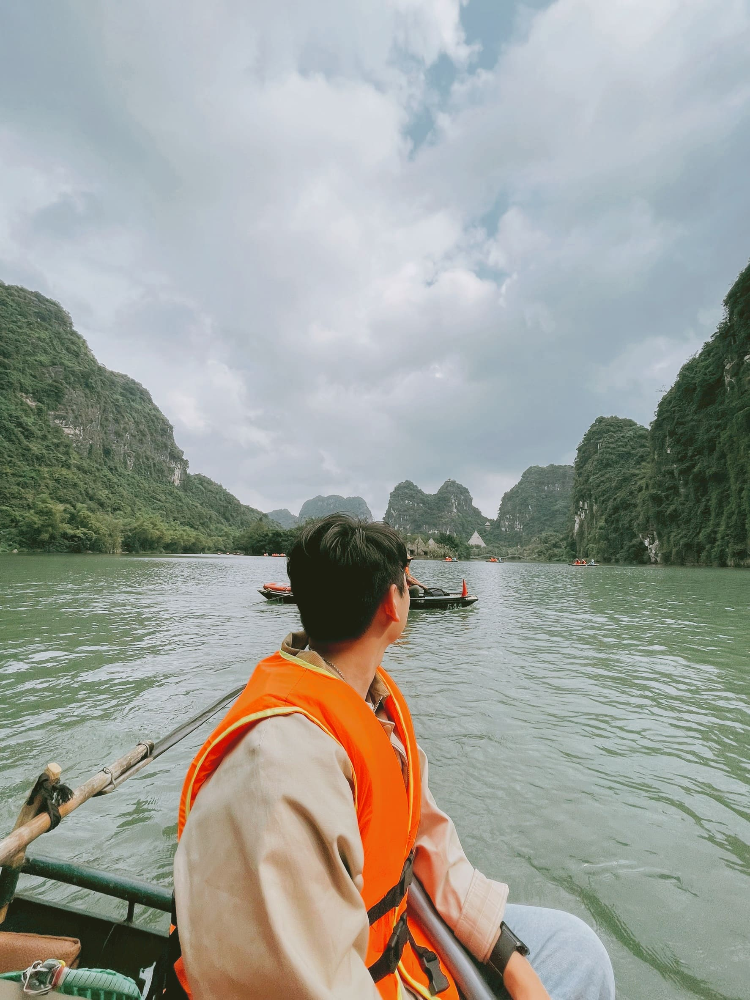
參訪越南最大的佛教聖地白亭寺，其規模與藏物皆為越南第一。在這裡看到韓星金宣虎跟智秀。
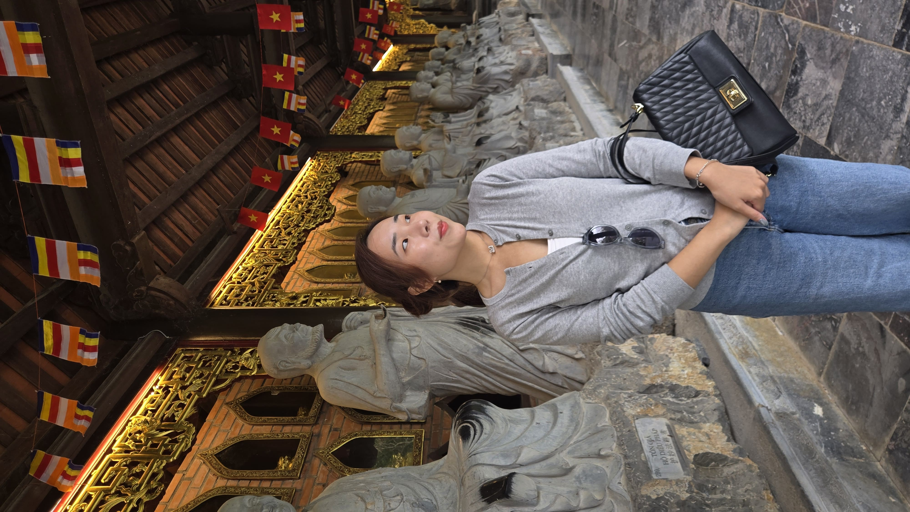
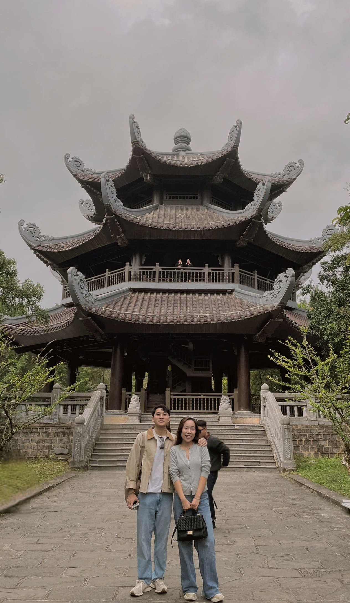
寧平碧洞 (Mua Cave)，登上觀景台
陸龍灣行程是我最喜歡的行程，在這天不只看到金宣虎跟智秀，也看到Alan Walker!
參加晚上的跨年行程，體驗在路邊攤邊吃東西邊跨年，越南跨年超級嗨。
YouTube Shorts:https://www.youtube.com/shorts/q6dic_H1Asg
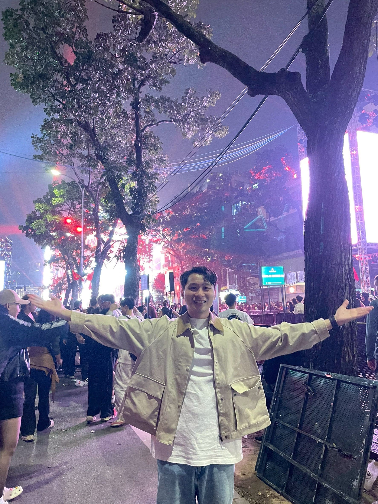
跨年結束後也去越南洗頭，但這次體驗沒有很好，直接被要小費。
Day 3
今天睡到自然醒，直接午餐去吃青蛙火鍋。
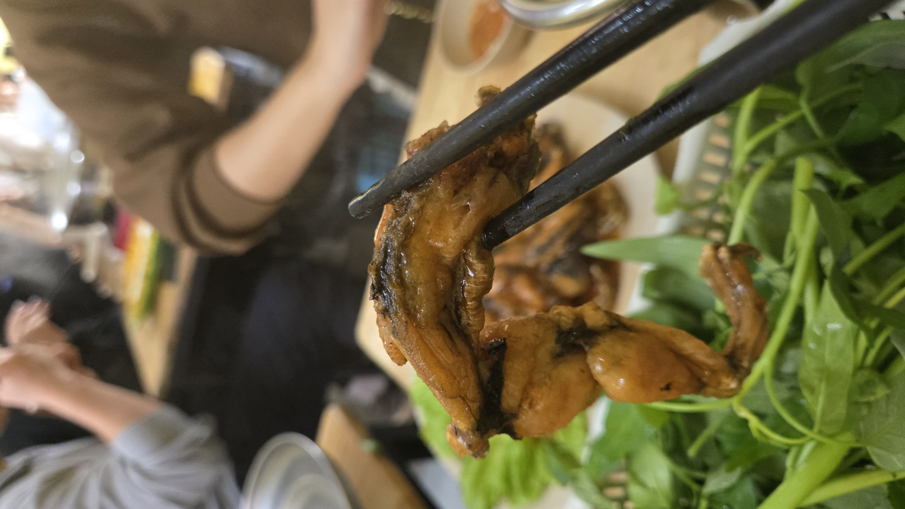
在越南街頭到處逛街，越南的傳統超市及越南的街頭都很美也很值得逛逛。
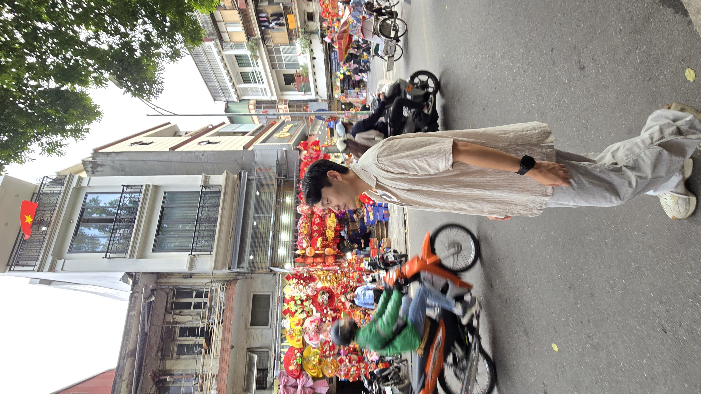
Day 4 (下龍灣)
下龍灣很美但是人太多了！
郵輪外觀跟裡面都滿美的～
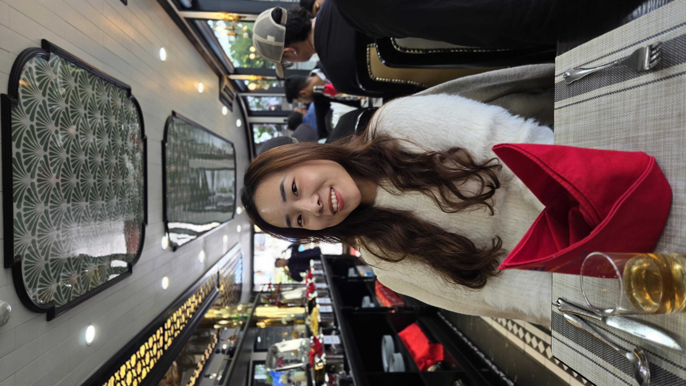
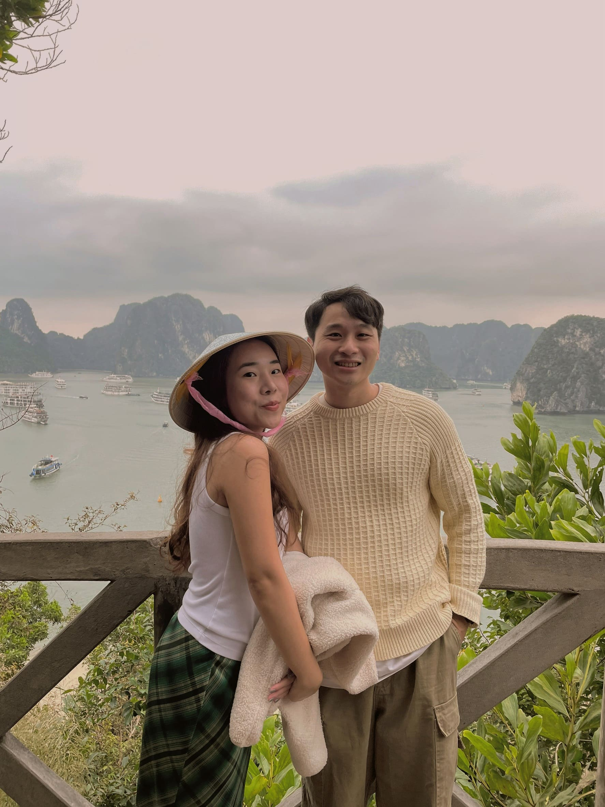
回到河內後，我們把我最後時間購買紀念品跟腳底按摩，非常享受在這裡的時間。
Day 5
早上在這裡體驗當地早餐，有點像麵糊蛋餅，但裡面是包肉末，沾魚露跟香菜吃，我很喜歡。
再買杯咖啡，就搭車前往機場，結束美好的河內之旅。
心得
我會很懷念這裡的人事物，尤其是第一天洗的姊姊，他推薦女友很多在地美食跟景點，也謝謝我們在這裡遇到的人都很善良也很誠懇，食物都很好吃就算我腸胃敏感的人也沒拉肚子。在國外遇到明星，也是第一次跟女友一起跨年。
祝大家在2026年都能心想事成，身體健康～
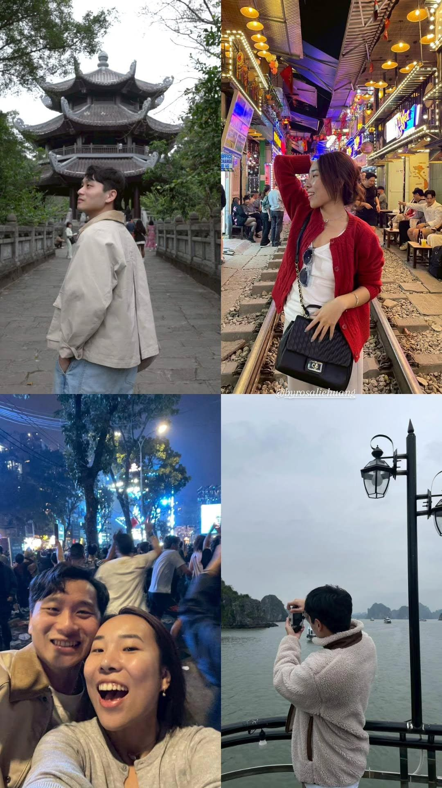
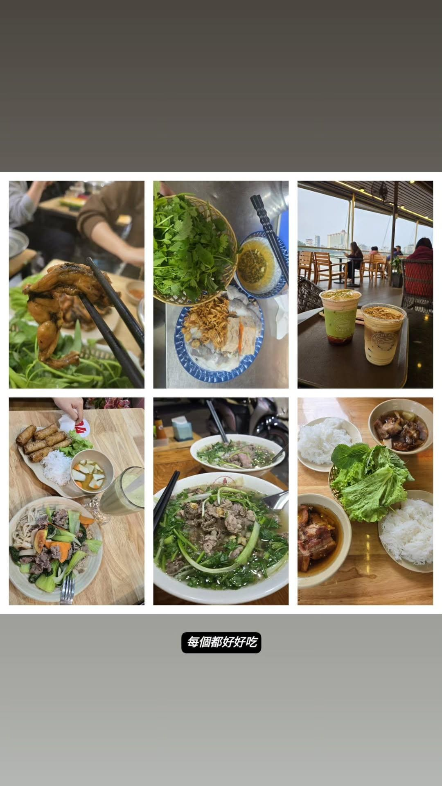
總花費
以下為兩人花費：
810 ➜ visa （只有我）
18000 ➜ airplane
5700 ➜ airbnb
2750 ➜ 長安
310 ➜ sim （只有我）
2930 ➜ 下龍灣
2000 ➜ 刷卡
10000 ➜ 現金
總共：43000